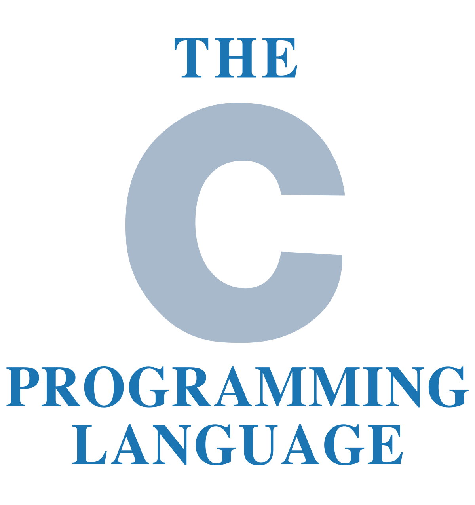
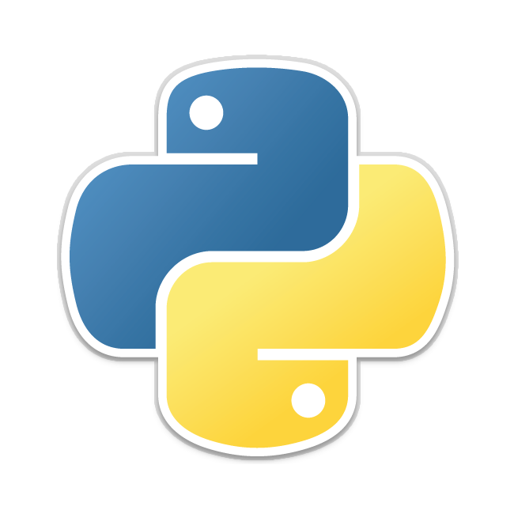
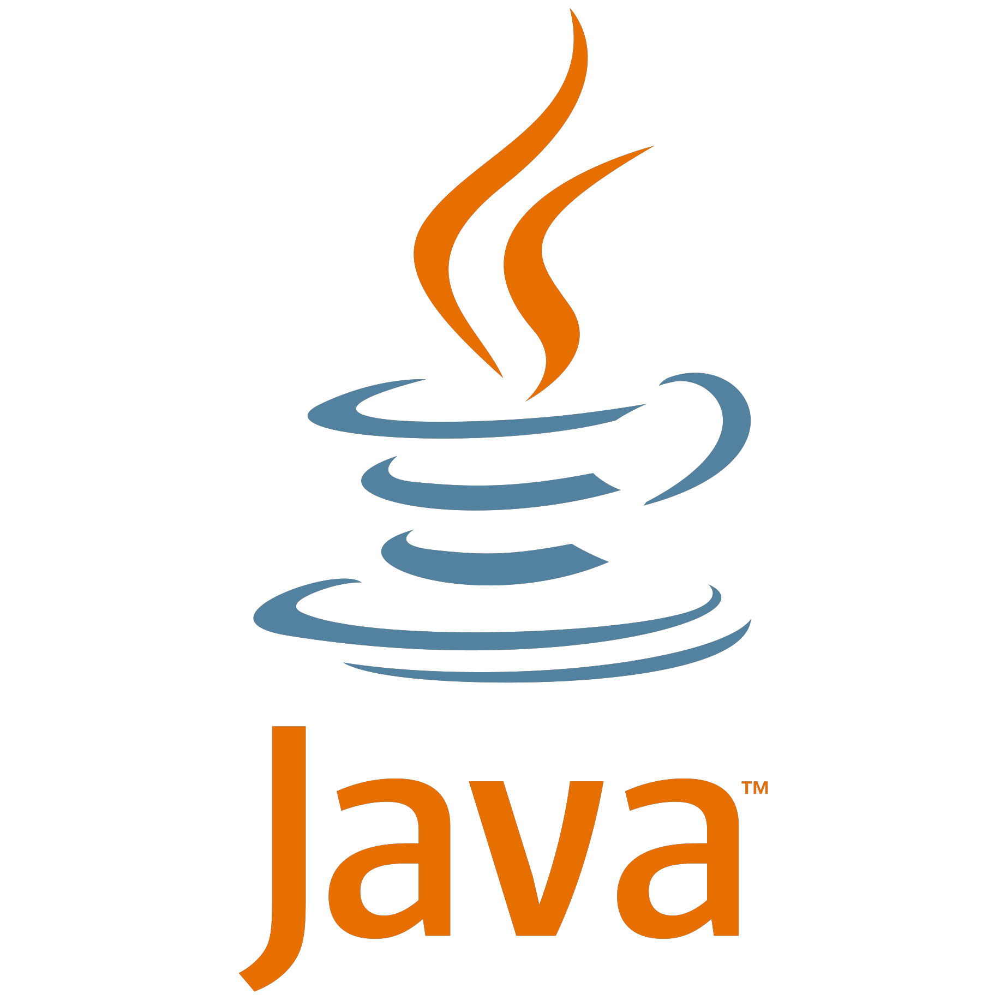

Qi Zhao
Toronto, ON, Canada · (416)-666-0743 ·
steve-qi.zhao@outlook.com
I am a Software Development Engineer at Amazon (Alexa / Edge AI), with 7+ years of experience building edge-AI and on-device systems in C++/Python across embedded Linux, automotive, and ambient-computing platforms. I enjoy turning ambiguous, greenfield architecture into shipped, reusable systems, and have recently extended my on-device work into cloud-based LLM pipelines that reason over ambient perception data.
Work Experience
Software Development Engineer – Ambient AI & GenAI (Edge and Cloud)
Amazon (Alexa / Edge AI), Toronto, Canada
2025 – Present
Software Development Engineer – Alexa Hybrid Engine (AHE)
Amazon (Alexa / Edge AI), Toronto, Canada
May 2022 – 2025
Software Developer
SOTI Inc, Mississauga, Canada
May 2019 – May 2022
Teaching Assistant
University of Toronto, Toronto, Canada
Sep 2018 – Apr 2019
IT Consultant Intern
Sichuan Communication Design, China Comservice, Chengdu, China
Jul 2017 - Oct 2017
Education
University of Toronto
Master of Science in Applied Computing (MScAC)
Completed all courses with excellent grades.
Took 8-month internship at SOTI and completed porting of Tizen system project from scratch.
Sep 2018 - Dec 2019
Xi'an Jiaotong University (China)
Bachelor of Engineering (BEng)
Department of Computer Science and Technology, School of Electronic and Information Engineering
GPA: 3.58 / Average Score: 86.55
Sep 2014 - Jun 2018
National Taiwan University of Science and Technology (Taiwan)
Student Exchange Program
Department of Computer Science and Information Engineering, College of Electrical and Computer Engineering
GPA: 4.07
Sep 2016 - Jan 2017
Skills
Programming Languages & Tools
-

-

-

-

-

Databases
AI / ML
- On-device / edge LLMs, LangChain / LangGraph, prompt engineering & LLM evaluation, Amazon Bedrock
Systems & Infrastructure
- Embedded Linux, Yocto / BitBake, systemd, CMake, cross-compilation, multithreading
Cloud, Data & Platforms
- Amazon AWS (Lambda, SQS, DynamoDB), SQL / NoSQL, Neo4j, Android
Other Skills & Knowledge
- Development Tools: Git, GitHub Enterprise, Azure DevOps
- CI/CD Pipeline & OTA/model delivery
- Teamwork Tools: Jira, Asana, Kanban
Awards & Honors
- Mitacs Accelerate in Dec 2019 - Mitacs, Canada
- China National Scholarship in 2017 - Ministry of Education of the P.R. China
- Meritorious Winner of Mathematical Contest in Modeling (MCM/ICM) in 2017 - COMAP, United States